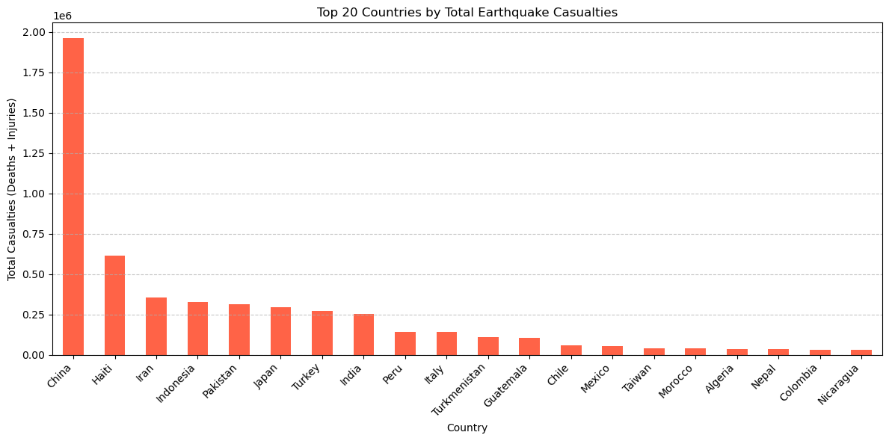

import pandas as pd
import matplotlib.pyplot as plt
# Load the datasets
quake_df = pd.read_csv("cleaned_data/Global_earthquake-cleaned.csv")
pop_df = pd.read_csv("cleaned_data/population_density_cleaned.csv")
# Work on a copy of the earthquake dataset (do not modify the original)
df = quake_df.copy()
# Extract country name from "Location Name" by splitting on colon
df["Country"] = df["Location Name"].str.split(":").str[0].str.strip().str.title()
# Fill missing values in casualty-related columns with 0
df["Total Deaths"] = df["Total Deaths"].fillna(0)
df["Total Injuries"] = df["Total Injuries"].fillna(0)
# Calculate total casualties
df["Total Casualties"] = df["Total Deaths"] + df["Total Injuries"]
# Filter out earthquakes with no casualties
df = df[df["Total Casualties"] > 0]
# Aggregate total casualties by country and select top 20
country_casualties = df.groupby("Country")["Total Casualties"].sum().sort_values(ascending=False).head(20)
# Plot bar chart
plt.figure(figsize=(12, 6))
country_casualties.plot(kind="bar", color="tomato")
plt.title("Top 20 Countries by Total Earthquake Casualties")
plt.ylabel("Total Casualties (Deaths + Injuries)")
plt.xlabel("Country")
plt.xticks(rotation=45, ha="right")
plt.grid(axis="y", linestyle="--", alpha=0.7)
plt.tight_layout()
plt.show()